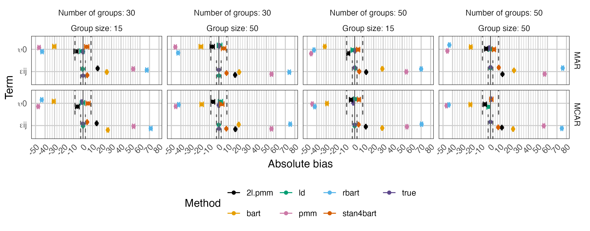
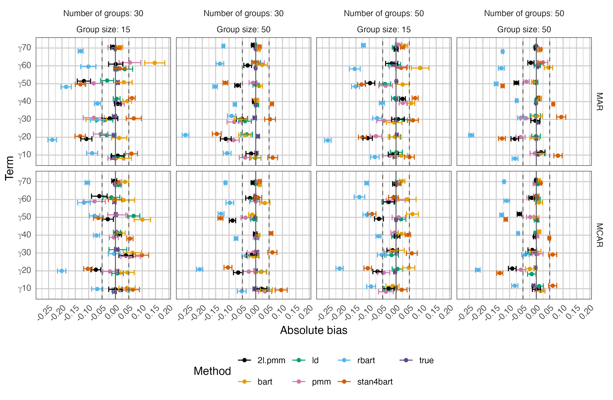
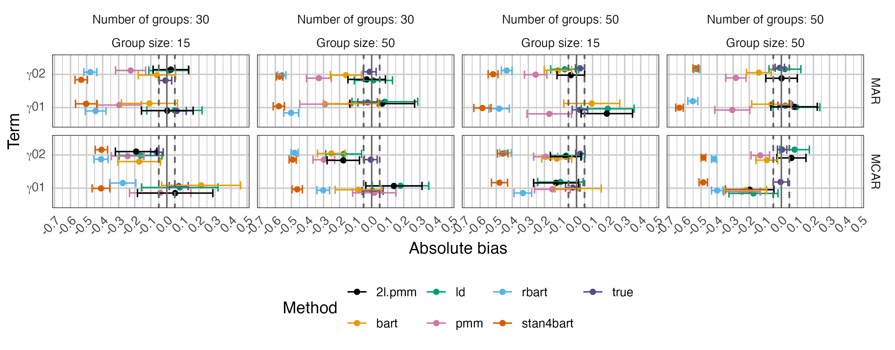
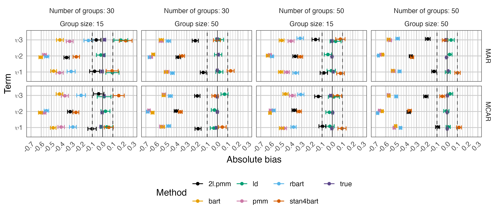
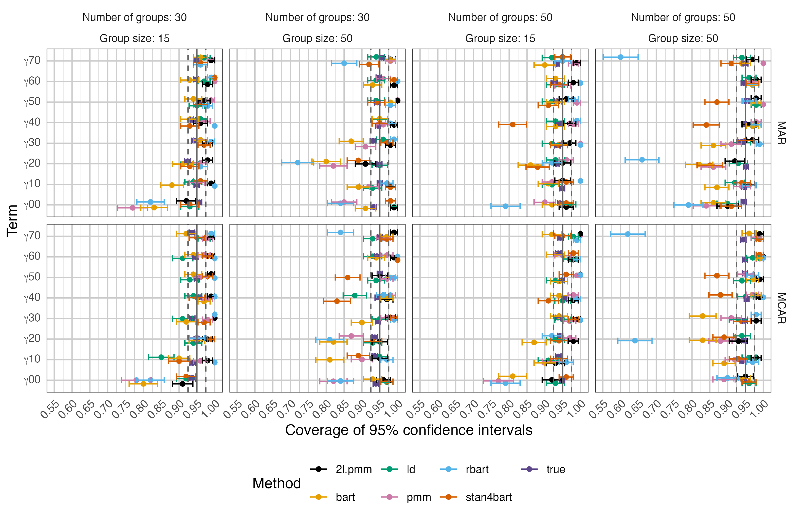
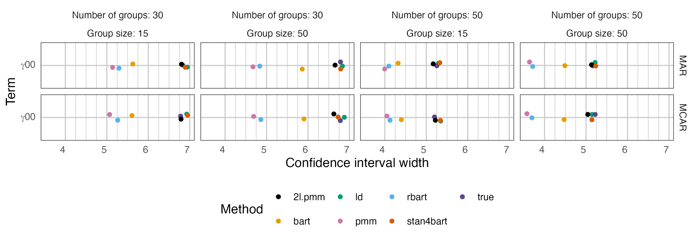
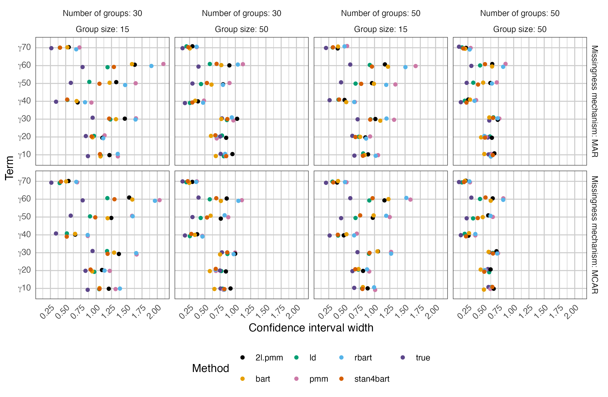
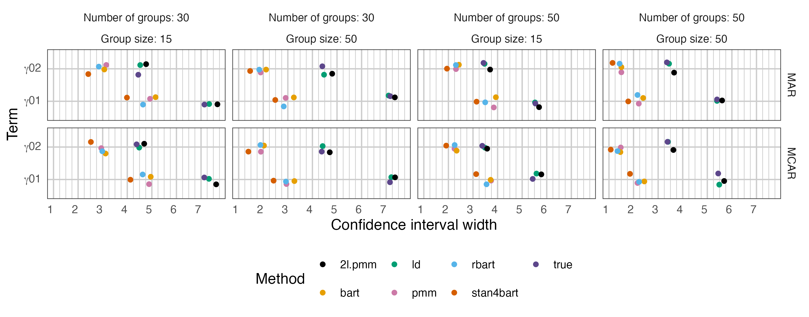

Visualizing results
1 Bias
1.1 Bias random intercept and residual variance
1.1.1 New graph

1.1.2 Old graph
1.1.3 Conclusion
1.2 Bias cross-level interactions
1.2.1 New graph
1.2.2 Old graph

1.2.3 Conclusion
:::
1.3 Bias random intercept
1.3.1 New graph
1.3.2 Old graph
1.4 Bias level 1 effects
1.4.1 New graph

1.4.2 Old graph
1.5 Bias level 2 effects
1.5.1 New graph

1.5.2 Old graph
1.6 Bias random slopes
1.6.1 New graph

1.6.2 Old graph
2 Coverage
2.1 Coverage intercept and level 1 effects
2.1.1 New graph

2.1.2 Old graph
2.2 Coverage level 2 effects and cross-level interactions
2.2.1 New graph
2.2.2 Old graph
3 Confidence interval width
3.1 Confidence interval width cross level interactions
3.1.1 New graph
3.1.2 Old graph
3.2 Confidence interval width intercept
3.2.1 New graph

3.2.2 Old graph
3.3 Condfidence interval width level 1 effects
3.3.1 New graph

3.3.2 Old graph
3.4 Confidence interval width level 2 effects
3.4.1 New graph
